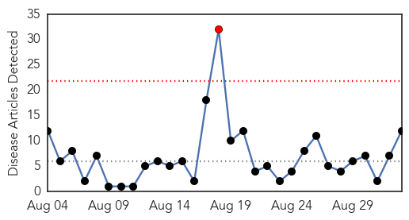
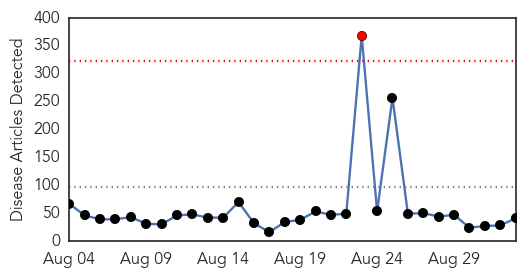
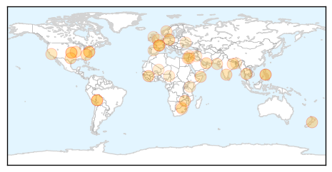

Cholera
30-Day Web Trend
1 alerts, 0 warnings

30-Day Twitter Trend
5 alerts, 0 warnings
Article Locations
Article Confidences

Top Articles:
- 0.994
- Ghana seeks WHO help to curb cholera
- 0.992
- Haiti launches cholera vaccination campaign
- 0.992
- Gov’t requests oral vaccines from WHO against Cholera
- 0.987
- Cholera outbreak: GHS bans sale of food on streets
- 0.983
- South Sudan: Complex Emergency Emergency Appeal 6 months update Appeal n°: MDRCF017 - South Sudan
- 0.974
- Cholera outbreak: Gov’t turns to WHO for help
- 0.961
- Cholera patients allege extortion at Mamprobi Polyclinic
- 0.923
- UN launches in Haiti second phase of vaccination campaign against cholera — MercoPress
- 0.882
- Cholera hits Cape Coast, kills four
- 0.760
- In Malakal, South Sudan's Abysmal Tragedy Cannot Be Ignored
- 0.715
- Ebola: NOA Takes Sensitisation Campaign to Imo as Quarantine Centre is Established
- 0.623
- Rotary forms taskforce to combat cholera in VR
Top Tweets:
-
No tweets found for Sep 02, 2014
Unknown
30-Day Web Trend
1 alerts, 0 warnings

30-Day Twitter Trend
3 alerts, 0 warnings

Article Locations
Article Confidences

Top Articles:
- 0.959
- American Ebola, vaccine trials
- 0.936
- Health unit confirms active case of tuberculosis in Orangeville
- 0.917
- Chicago Tribune
- 0.910
- The world windows to Thailand
- 0.871
- Malaria Bounces Back as Anopheles Mosquito Resurfaces
- 0.866
- Securing release of Americans held in N. Korea a top priority -White House
- 0.866
- Somalia's President Mohamud arrives to attend the Africa Union Peace and Security Council Summit on Terrorism in Nairobi
- 0.866
- A padlock and a condom are seen around cables along the bridge of the Americas in La Paz
- 0.866
- Tropical Storm Dolly continues toward Mexico-NHC
- 0.866
- Saudi pipeline set alight after shots fired at security patrol-source
- 0.866
- An activist for the rights of women holds a banner during a protest rally in La Paz
- 0.857
- Choosing the flu vaccine that's right for you - KLTV.com-Tyler, Longview, Jacksonville, Texas
- 0.856
- Sudan Vision Daily
- 0.844
- Nurse practitioner receives award for HPV research
- 0.843
- Visitors under age 12 to Blessing Hospital restricted until further notice
- 0.838
- TB testing involving Moncton student encouraging, health officer says
- 0.755
- Free flu vaccines for 60,000 Oakland kids
- 0.731
- India to Eradicate Kala-azar by 2015: Harshvardhan
- 0.713
- Mississippi: Canton schools report scabies outbreak, 15 cases reported
- 0.704
- KWSB held responsible for naegleria fowleri existence
- 0.677
- Parkinson’s Disease support group to meet Sept. 10
- 0.673
- DA probe shows water ‘dangerously’ polluted
- 0.648
- Libyan health care on life support
- 0.630
- Cancer drive at schools - Gauteng
- 0.609
- Bobcat that attacked Connecticut woman tests rabies positive
- 0.572
- Pig breeders warned over virus
- 0.564
- Global snapshot of infectious canine cancer shows how to control the disease
- 0.563
- Observer
- 0.547
- Obama orders 350 more US troops to Baghdad
- 0.547
- IS video purports to show beheading of second US journalist
- 0.547
- Video: Bodies ‘left behind’ as Ukraine forces flee rebel assault
- 0.547
- US military targets Somalia's al Shabaab Islamist group
- 0.547
- Several UN peacekeepers killed in Mali explosion
- 0.547
- NATO plans new 'spearhead' force to counter Russia
- 0.547
- France vows crackdown on unemployment benefit ‘abusers’
- 0.547
- Trust and 'bio-disaster units' needed to fight Ebola
- 0.547
- Britain drops arrest warrant for ill boy’s parents
- 0.547
- Boko Haram Islamists seize northeast Nigerian town
- 0.547
- Arab media strike back at IS Islamists – with cartoons
- 0.540
- Ban on Pig Imports from Virus-Hit Countries Must Be Upheld
- 0.536
- Bangladesh floods test disaster response improvements - Bangladesh
Top Tweets:
- 0.731
- Obras en la Avenida Nu Guasú: Las obras en la Avenida Ñu Guasú avanza y en breve será un acceso de vital de im... http://t.co/lityhaWKtI
- 0.666
- 😂😂😂😂 tengo internet en el celular y no lo uso jajaja osea que voy a tener serie por mas de 5 horas
- 0.557
- Reciben información sobre trabajos de perforación en el Chaco Paraguayo: La Comisión de EnergÃa, Recursos Natu... http://t.co/euUPNgMzPH
- 0.500
- hoy dÃa libre de trabajo y de uni , mañana dÃa de no libertad ðŸ˜